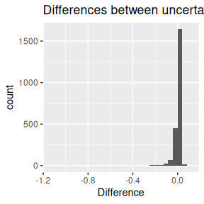

Mass calculation
mass_comparison.Rmd1 Comparison of results with weighted mean and without
As it is described in vignette("datafiles") article, the data within each replicate of the experiment is aggregated using weighted mean. Below we present the effect it has on the results.
The whole workflow is described in the mentioned article. Here the focus is on the first aspect of the processing.
For the analysis, we use the example file from HaDeX, measurements of alpha subunit from elongation factor eEF1.
As described, the first step is to transform the \(Center\) value (geometric centroid of the isotopic envelope for given peptide in a given state in given time point) and then to aggregate the values measured for different charge values. This is all done within each replicate.
The aggregation in our workflow is a weighted mean, with \(Inten\) (intensity) values as weights, as shown below.
avg_exp_mass = weighted.mean(exp_mass, Inten, na.rm = TRUE)Later, the results from replicates are aggregated using the mean, and their uncertainty is calculated as the standard deviation of the mean.
How the weighted mean change the result in comparison with the simple mean? Let’s see.
Below are calculated values of mass in two approaches and the difference between them for the example peptide.
## Sequence Start End State Exposure no_weight weight
## 1 GFGDLKSPAGL 1 11 ALPHA_beta_gamma 0.000 1061.260 1061.312
## 2 GFGDLKSPAGL 1 11 ALPHA_beta_gamma 0.167 1062.913 1062.903
## 3 GFGDLKSPAGL 1 11 ALPHA_beta_gamma 1.000 1063.664 1063.723
## 4 GFGDLKSPAGL 1 11 ALPHA_beta_gamma 5.000 1064.541 1064.513
## 5 GFGDLKSPAGL 1 11 ALPHA_beta_gamma 25.000 1065.531 1065.470
## 6 GFGDLKSPAGL 1 11 ALPHA_beta_gamma 150.000 1066.610 1066.602
## 7 GFGDLKSPAGL 1 11 ALPHA_beta_gamma 1440.000 1066.729 1066.720
## 8 GFGDLKSPAGL 1 11 ALPHA_Gamma 0.000 1061.260 1061.312
## 9 GFGDLKSPAGL 1 11 ALPHA_Gamma 0.167 1062.969 1062.977
## 10 GFGDLKSPAGL 1 11 ALPHA_Gamma 1.000 1064.178 1064.155
## 11 GFGDLKSPAGL 1 11 ALPHA_Gamma 5.000 1064.926 1064.907
## 12 GFGDLKSPAGL 1 11 ALPHA_Gamma 25.000 1065.947 1066.000
## 13 GFGDLKSPAGL 1 11 ALPHA_Gamma 150.000 1066.665 1066.669
## 14 GFGDLKSPAGL 1 11 ALPHA_Gamma 1440.000 1066.743 1066.745
## 15 GFGDLKSPAGL 1 11 Alpha_KSCN 0.000 1061.260 1061.312
## 16 GFGDLKSPAGL 1 11 Alpha_KSCN 0.167 1063.051 1063.072
## 17 GFGDLKSPAGL 1 11 Alpha_KSCN 1.000 1064.070 1064.084
## 18 GFGDLKSPAGL 1 11 Alpha_KSCN 5.000 1064.720 1064.729
## 19 GFGDLKSPAGL 1 11 Alpha_KSCN 25.000 1065.951 1065.908
## 20 GFGDLKSPAGL 1 11 Alpha_KSCN 150.000 1066.631 1066.581
## 21 GFGDLKSPAGL 1 11 Alpha_KSCN 1440.000 1066.743 1066.745
## diff
## 1 0.051765541
## 2 -0.010767969
## 3 0.058873659
## 4 -0.028696674
## 5 -0.060590887
## 6 -0.007985609
## 7 -0.009715577
## 8 0.051765541
## 9 0.008153128
## 10 -0.022999974
## 11 -0.018235244
## 12 0.053519044
## 13 0.004654692
## 14 0.001250657
## 15 0.051765541
## 16 0.021661606
## 17 0.013868192
## 18 0.008137733
## 19 -0.042716596
## 20 -0.050008083
## 21 0.001250657Below are calculated values of the uncertainty of mass in two approaches and the difference between them for the example peptide.
## Sequence Start End State Exposure no_weight weight
## 1 GFGDLKSPAGL 1 11 ALPHA_beta_gamma 0.000 0.00000000 0.000000000
## 2 GFGDLKSPAGL 1 11 ALPHA_beta_gamma 0.167 0.04234807 0.020535773
## 3 GFGDLKSPAGL 1 11 ALPHA_beta_gamma 1.000 0.06500377 0.017359706
## 4 GFGDLKSPAGL 1 11 ALPHA_beta_gamma 5.000 0.00000000 0.000000000
## 5 GFGDLKSPAGL 1 11 ALPHA_beta_gamma 25.000 0.05557975 0.078509790
## 6 GFGDLKSPAGL 1 11 ALPHA_beta_gamma 150.000 0.01734150 0.049576933
## 7 GFGDLKSPAGL 1 11 ALPHA_beta_gamma 1440.000 0.01500273 0.039981766
## 8 GFGDLKSPAGL 1 11 ALPHA_Gamma 0.000 0.00000000 0.000000000
## 9 GFGDLKSPAGL 1 11 ALPHA_Gamma 0.167 0.01444925 0.003059254
## 10 GFGDLKSPAGL 1 11 ALPHA_Gamma 1.000 0.06222496 0.035068821
## 11 GFGDLKSPAGL 1 11 ALPHA_Gamma 5.000 0.05286541 0.057318502
## 12 GFGDLKSPAGL 1 11 ALPHA_Gamma 25.000 0.07628215 0.072421134
## 13 GFGDLKSPAGL 1 11 ALPHA_Gamma 150.000 0.06797928 0.080539467
## 14 GFGDLKSPAGL 1 11 ALPHA_Gamma 1440.000 0.01237539 0.037980370
## 15 GFGDLKSPAGL 1 11 Alpha_KSCN 0.000 0.00000000 0.000000000
## 16 GFGDLKSPAGL 1 11 Alpha_KSCN 0.167 0.06344120 0.063142057
## 17 GFGDLKSPAGL 1 11 Alpha_KSCN 1.000 0.03242306 0.057662478
## 18 GFGDLKSPAGL 1 11 Alpha_KSCN 5.000 0.04302651 0.044514766
## 19 GFGDLKSPAGL 1 11 Alpha_KSCN 25.000 0.06913469 0.027139060
## 20 GFGDLKSPAGL 1 11 Alpha_KSCN 150.000 0.02307237 0.014163676
## 21 GFGDLKSPAGL 1 11 Alpha_KSCN 1440.000 0.01237539 0.037980370
## diff
## 1 0.0000000000
## 2 -0.0218122946
## 3 -0.0476440653
## 4 0.0000000000
## 5 0.0229300404
## 6 0.0322354331
## 7 0.0249790358
## 8 0.0000000000
## 9 -0.0113899906
## 10 -0.0271561376
## 11 0.0044530941
## 12 -0.0038610178
## 13 0.0125601858
## 14 0.0256049757
## 15 0.0000000000
## 16 -0.0002991392
## 17 0.0252394169
## 18 0.0014882590
## 19 -0.0419956278
## 20 -0.0089086940
## 21 0.0256049757And for the whole set of peptides, the average mass difference is:
## [1] 0.01346195and uncertainty difference is:
## [1] -0.008750802Below are the histograms of these differences.
First, differences between mass:

Secondly, the differences between uncertainties:
